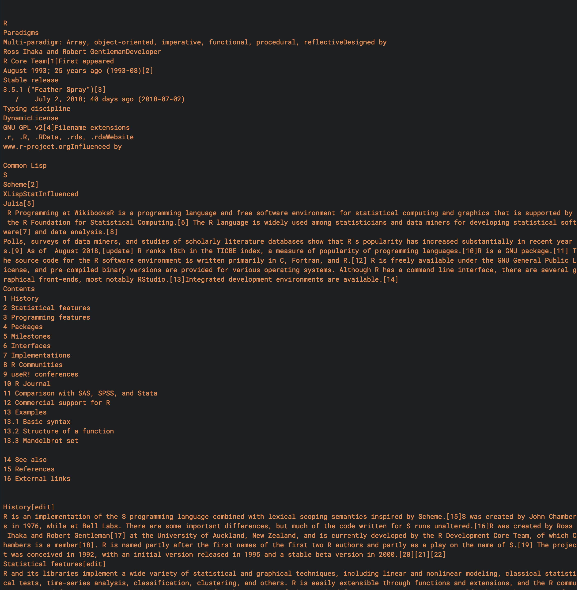

APIs
An application programming interface allows one to interact with a website9. In the simplest situation, this is merely a url-based approach to grabbing what you need.
As an example consider the following generic URL:
http://somewebsite.com/key?param_1;param_2
The key ingredients are:
http://somewebsite.com/the base URLkeysome authorization component?param_1;param_2the parameters of interest that specify what you want to grab from that website.
With R, once we have authorization we can then simply feed the parameters that tell the server what data to provide. We can do this in a raw fashion, where we make the URL, or web address10, that has the necessary specification, and then just take what it provides. Alternatively, there are many R packages to make the process easier for things like Twitter, Qualtrics, and many other websites.
Raw Example
Basic functions of the raw approach are requests to a server such as GET and POST, commands that tell the server to provide something or perhaps provide data to it. In the following, api_key11 is an R object with a character string of the key provided to me by the website. I use the httr package for the web functionality to acquire the content. In particular, the GET function retrieves whatever information is noted by the request/url. Additional arguments or modifications to the base URL can also be provided, which is what the query part does.
# raw approach
library(httr)
most_viewed_base = GET('https://api.nytimes.com/svc/mostpopular/v2/mostviewed/all-sections/30.json',
query=list(`api-key`=api_key))
# see the url created
# most_viewed_base$url # tacks on ?api-key=YOURAPI at the endAt this point, most_viewed_base is a response class object, a list with several pieces of information including what we want, which is the content.
List of 9
$ status_code: int 200
$ headers :List of 18
..- attr(*, "class")= chr [1:2] "insensitive" "list"
$ all_headers:List of 1
$ cookies :'data.frame': 0 obs. of 7 variables:
$ content : raw [1:59907] 7b 22 73 74 ...
$ date : POSIXct[1:1], format: "2018-08-12 15:38:04"
$ times : Named num [1:6] 0 0.154 0.212 0.309 0.465 ...
..- attr(*, "names")= chr [1:6] "redirect" "namelookup" "connect" "pretransfer" ...
$ request :List of 7
..- attr(*, "class")= chr "request"
$ handle :Class 'curl_handle' <externalptr> However, the content is in binary, and to get it into a useful state we’ll use the content function. The rest of the code just takes the title and arranges it by date.
most_viewed = content(most_viewed_base)
most_viewed$results %>%
map_df(function(x) data_frame(title=x$title, date=x$published_date)) %>%
arrange(desc(date))# A tibble: 20 x 2
title date
<chr> <chr>
1 Ohio Special Election Results: 12th Congressional District 2018-08-07
2 Michigan Primary Election Results 2018-08-07
3 The Age That Women Have Babies: How a Gap Divides America 2018-08-04
4 Rick Genest, Tattooed ‘Zombie Boy’ in Lady Gaga Video, Dies at 32 2018-08-03
5 Apple’s Value Hit $1 Trillion. Add Disney to Bank of America and ... You’re Halfway There 2018-08-02
6 Losing Earth: The Decade We Almost Stopped Climate Change 2018-08-01
7 Facebook Identifies an Active Political Influence Campaign Using Fake Accounts 2018-07-31
8 Trump Administration Mulls a Unilateral Tax Cut for the Rich 2018-07-30
9 Motherhood in the Age of Fear 2018-07-27
10 An Extremely Detailed Map of the 2016 Presidential Election 2018-07-25
11 How Goop’s Haters Made Gwyneth Paltrow’s Company Worth $250 Million 2018-07-25
12 Spotting CNN on a TV Aboard Air Force One, Trump Rages Against Reality 2018-07-24
13 When We Eat, or Don’t Eat, May Be Critical for Health 2018-07-24
14 U.S. Breaks Up Vast I.R.S. Phone Scam 2018-07-23
15 Michael Cohen Secretly Taped Trump Discussing Payment to Playboy Model 2018-07-20
16 From the Start, Trump Has Muddied a Clear Message: Putin Interfered 2018-07-18
17 Mariia Butina, Who Sought ‘Back Channel’ Meeting for Trump and Putin, Is Charged as Russian Agent 2018-07-16
18 Trump, Treasonous Traitor 2018-07-15
19 Trump Walks in Front of Queen Elizabeth, Causing Social Media Frenzy 2018-07-14
20 The Power of Positive People 2018-07-10The community API can get user comments and movie reviews. In the following case, it will need a specific date to retrieve comments.
comments_base = GET('http://api.nytimes.com/svc/community/v3/user-content/by-date.json',
query=list(date=Sys.Date(),
`api-key`=api_key))
comments = content(comments_base)
comments$results$comments %>%
map(function(x) x$commentBody) %>%
head()[[1]]
[1] "One of the easiest Sundays. This is the only one that I can recall where I was able to not go through multiple passes through the whole puzzle. Solved the top two thirds and never looked back. The bottom third gave a little struggle but fell quickly. <br/><br/>Loved the theme and the puns. Very entertaining. Figured out the theme after BUTTER RIVALS and CURSES FOULED AGAIN. And, pangram to boot! A very well crafted puzzle. "
[[2]]
[1] "Paul Ryan has been an abject failure in politics. Not sure that he accomplished much except to show himself to be a weak, impotent, mouthpiece for the greedy and wealthy who sponsored his 20 plus years in congress. A true enemy of the poor, elderly, and under-served. Self serving politicians like Paul Ryan find a way to exploit their time in office. He'll be fine. Lobbyist?, Fox News contributor?, Conservative \"think tank\"?, 2020 presidential candidate????"
[[3]]
[1] "You betcha. It's like we all moved into a city that has agreed that all buildings painted in the same base and trim Pantone colors, for nearly 2 decades. <br/><br/>I'm a performing and recording musician, working with several different bands. The homogeneity has made learning new material almost an oxymoron. The result, as a listener, is that all of the music becomes background noise - with no variance, there isn't much reason to tune in to any particular song, unless I prefer Taylor Swift's pout to Katy Perry's. But - that's the video...I don't even need the sound on to appreciate the visual.<br/><br/>That homogeneity is probably the biggest reason I gave up on pleasure listening to current pop stations over the last 10 years or so. <br/><br/>Please - let us hear something different, worth getting excited about! Something that I can't play with 95%+ accuracy after hearing it one time! Give me a good reason to spend less time listening to great music that is 25-50 years old, and listen to something new because it's interesting."
[[4]]
[1] "what Trump knows best, and there's not a whole lot he knows best, is self-promotion. and to his good fortune, his followers ain't too smart to see through it. well, good for him."
[[5]]
[1] "This article is spot on. I was asked to give a talk once, on the most important skill I had learned that paid off in my career. I spoke of learning to type and noted many of Mr. Bruni's points...typing was persistence, practice, and eventually success. Such a simple recipe, really...!"
[[6]]
[1] "@David Appell When money goes out, it may or may not end up paying foreign wages. It could also just go into foreign profit, taxes, real estate, etc.<br/>Eventually, all the money which goes out has to come back. When it comes back to us, it goes to labor, profit, taxes, real estate, etc."The API documentation doesn’t make obvious how the comments are chosen (aside from being taken from some section of the paper), or what the limits are. As mentioned previously, this is typical API documentation in my experience, such that it might take some effort to know exactly what you’re working with.
R packages
Many R packages allow extremely easy access to various websites through their API. Usually all it takes is acquiring the authorization and the package will do the rest. It might only be marginally less effort than the raw approach we did before, but can make things more efficient in the long run (assuming the package is kept up to date).
New York Times Article Search
The following is an example of accessing the New York Times article search API12. Using the rtimes package, we can use a function similar to any other in R. In this case we need a query, beginning date and an end date to collect articles that contain the text of the query. Note that it still requires an key, but that’s not shown here.
library(rtimes)
article_search = as_search(q="bomb",
begin_date = '20160918',
end_date = '20160919')[-(1:2)]
article_search$data %>%
arrange(desc(pub_date))# A tibble: 10 x 25
web_url snippet source multimedia keywords pub_date document_type news_desk type_of_material `_id` word_count score print_page uri section_name headline.main headline.kicker headline.conten… headline.print_…
<chr> <chr> <chr> <list> <list> <chr> <chr> <chr> <chr> <chr> <int> <dbl> <chr> <chr> <chr> <chr> <lgl> <lgl> <chr>
1 https:… U.S. i… "" <data.fra… <data.f… 2016-09… article None News 57df… 0 2.30e-3 <NA> <NA> <NA> U.S. Officia… NA NA U.S. Officials …
2 https:… "Democ… "" <data.fra… <data.f… 2016-09… article None News 57de… 0 2.91e-5 <NA> <NA> <NA> Clinton Cond… NA NA Clinton Condemn…
3 https:… The au… The N… <data.fra… <data.f… 2016-09… multimedia N.Y. / R… Video 57de… 28 3.07e-5 <NA> <NA> <NA> Explosion Ro… NA NA <NA>
4 https:… The La… "" <data.fra… <data.f… 2016-09… article None News 57de… 0 1.90e-5 <NA> <NA> <NA> The Latest: … NA NA The Latest: Sus…
5 https:… The pe… The N… <data.fra… <data.f… 2016-09… article Metro News 57de… 1587 2.19e-3 1 nyt:… <NA> Manhattan Bo… NA NA Bombs Built for…
6 https:… Somali… "" <data.fra… <data.f… 2016-09… article None News 57de… 0 2.50e-5 <NA> <NA> Africa Al Shabaab K… NA NA Al Shabaab Kill…
7 https:… A Soma… "" <data.fra… <data.f… 2016-09… article None News 57de… 0 1.97e-3 <NA> <NA> Africa Somali Islam… NA NA Somali Islamist…
8 https:… "Donal… "" <data.fra… <data.f… 2016-09… article None News 57de… 0 1.99e-5 <NA> <NA> <NA> Trump, Clint… NA NA Trump, Clinton …
9 https:… Invest… "" <data.fra… <data.f… 2016-09… article None News 57de… 0 1.98e-5 <NA> <NA> <NA> Police Searc… NA NA Police Search f…
10 https:… Ms. Ke… The N… <data.fra… <data.f… 2016-09… article Arts&Lei… News 57da… 1226 2.11e-3 12 <NA> Television Ellie Kemper… NA NA … I Bombed on L…
# ... with 6 more variables: headline.name <lgl>, headline.seo <lgl>, headline.sub <lgl>, byline.original <chr>, byline.person <list>, byline.organization <chr>Wikipedia
With the WikipediR package, getting the whole content of a page is just one possibility, and it feeds nicely into rvest functionality for more processing. Here, the package’s page_content function will extract information from the page. The ‘text’ element is the html content, which we can then feed to the previously used rvest functions. I show only a snippet of the output.
library(WikipediR)
r_wikipedia = page_content(language='en', 'wikipedia', page_name = 'R_(programming_language)')
str(r_wikipedia[[1]], 1) # inspect
r_wikipedia$parse$text$`*` %>%
read_html %>%
html_text %>%
message
Qualtrics
Qualtrics is a survey software which one can use to create and disseminate surveys and the data from them, and is a very useful tool in this regard. The University of Michigan has a license, and so anyone at the university can use it, which is why I provide a generic example here.
The qualtricsR13 package makes it easy to import data from and export surveys to Qualtrics, as well as functionality to create a standard survey within R. As before you’ll need proper authorization, but then it can be straightforward to grab your data from Qualtrics without having to go to the website.
Others
Note that there are many R packages that work with various APIs, so if you’re looking to work with data from a site that has an API, definitely see if something already exists. If it is a very popular website, you are probably not the first person using R that wants to access its data.
Issues
Documentation
One issue I commonly find with APIs is that often they are generally poorly documented beyond a certain level of initial detail, e.g. often telling you what the parameters are but not the values they can take on. As an example, if something says it wants a date, you may be left to figure out what date format is expected. Sometimes I feel that developers spend so little effort it seems they don’t actually want people to use the API. Just be aware that you may still have some guesswork left even when a lot of information is provided initially.
API Changes
Many websites cannot leave the API alone very long. Sometimes this is due to actual content changes that require subsequent changes in the API, sometimes it might reflect a server side issue that needs to be addressed. Often a reason isn’t given. The gist is that you shouldn’t be surprised if an API package in R doesn’t work if it hasn’t been updated recently. As the code is often pretty straightforward, you may be able to easily tweak a function to work with the current API.
Broken API
Sometimes someone fiddles with things they shouldn’t and you start getting errors. As an example, when I was first developing this document, NY times article search would start providing different errors depending on the combination of start and end date (forbidden, API rate exceeded, no content etc.). It is not necessarily the case that you are doing something incorrectly.
Restrictions
Note that there are almost always restrictions. For example, the New York Times API limits requests to 1000 calls per day, and five calls per second. Unfortunately these are typically not based on actual testing of what modern servers could handle and are often overly restrictive (and overly optimistic in estimates of web traffic) in my opinion. I mention it though because you’ll need to plan ahead. If you need 1 million requests, but the API restricts you to 1000 a day, you’ll obviously need some other way to get the data you want. Fortunately, a simple request to the website developers for more flexibility might be all that is needed.
APIs are much more general than just the Web version described here, in that they allow a means of interaction with anything- operating system, software, hardware etc. For our purposes though, it usually boils down to the examples above.↩
Technically uniform resource locator.↩
The reason you don’t see the key is that, like passwords, you should not provide your keys to others. They provide a means for you to interact with the website, not other people.↩
There are several APIs for different types of content.↩